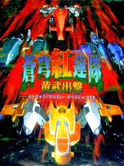

沒錯，到今天我的感冒還是沒好。
每天的日記都用感冒當開頭，這也太無趣了。
可是這非我所願意的啊，誰願意每天早上起床的第一個感覺是喉嚨痛咧？
今天好像有好一些。我希望這不是我的錯覺，如果真的感冒快好了， 我就是想衝出去玩。
每天在家睡睡睡，感覺上好像很沒力。 
實際上的確是很沒力。沒有作甚麼特別東西，文字啦或程式啦或啥創作， 又回到了那種無聊的日子了。
拿出PS玩一玩，躺著玩射擊遊戲....是我神經變鈍了嗎？老是去撞子彈。
晚上再作對照實驗，坐著玩....好像又回復正常了。
結論：玩射擊遊戲得認真玩。